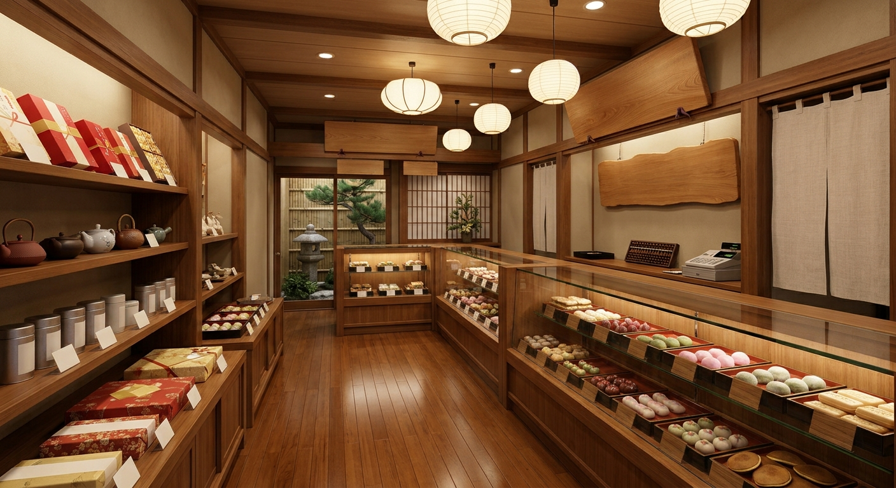

熊谷らしい手土産がほしい
ラグビーのまちの「ラグビーモナカ」
熊谷ラグビー場の開場を記念したお菓子です。お福分けにも選ばれています。
熊谷に根ざし、
新しい和菓子に挑む。
花扇は昭和62年（1987年）、熊谷の町に小さな和菓子店として生まれました。
創業以来、素材を厳選し、昔ながらの手法で一品ずつ丹精込めて作り続けています。お茶席のための上生菓子は常に用意し、季節ごとの創作菓子もお届けしています。
今は店主の高橋隆と、息子の功典が親子で技を磨き、新しい創作和菓子にも挑んでいます。地元の文化に寄り添いながら、まだ誰も見たことのないお菓子を。その気持ちが花扇の和菓子の原点です。
店内には囲炉裏のあるくつろぎの空間があり、お茶と和菓子をゆっくり楽しんでいただけます。和菓子教室も開いています。

手土産選び、季節のお菓子、ちょっとひと休み。和菓子のお悩みに、花扇が応えます。
熊谷らしい手土産がほしい
熊谷ラグビー場の開場を記念したお菓子です。お福分けにも選ばれています。
季節を感じる和菓子が食べたい
移ろう季節を形にした上生菓子。お茶席にもご利用いただけます。
ありきたりな和菓子では物足りない
キウィフルーツ大福、カフェオレ大福など、花扇ならではの一品です。
確かな技のお菓子を選びたい
全国和菓子の大会で優勝した砂糖菓子を、店内でご覧いただけます。
お茶と一緒にゆっくりしたい
囲炉裏のそばで、お茶と和菓子をいただけます。
和菓子作りを体験してみたい
作り手から直接、和菓子づくりを学べます。
まず味わっていただきたい、二つのお菓子です。

ラグビーのまち熊谷だからこそ生まれた、花扇の看板創作菓子。遊び心と和菓子の技が詰まった一品です。

季節ごとに姿を変える上生菓子。お客様から「特においしい」とご好評をいただいています。
ご来店くださった方からいただいた言葉です。
いただいたラグビーモナカがきっかけで、時々お邪魔するようになりました。特においしいのは季節の練り切りです。お菓子はもちろん、ご夫妻の人柄にも惹かれて、家から1時間かけて買いに行っています。明日も行く予定です。
女将さんがとても親切です。キウィフルーツ大福はキウィの酸味が大福に意外と合います。カフェオレ大福は生クリームのまろやかな甘さがウィンナーコーヒーのよう。オレンジの寒天ゼリーは本物の皮に入っていて、柑橘の香りが爽やかでした。
花扇は、これからも新しいことに挑みます。準備中のサービスをご紹介します。
ご自宅から参加できる和菓子づくり。遠方のお客様も、作り手と一緒に練り切りを仕立てられます。
四季の上生菓子を、ご自宅やご家族のもとへ。季節の便りのようにお届けします。
お名前やメッセージを入れた特別な和菓子を、記念日や贈り物のためにおつくりします。